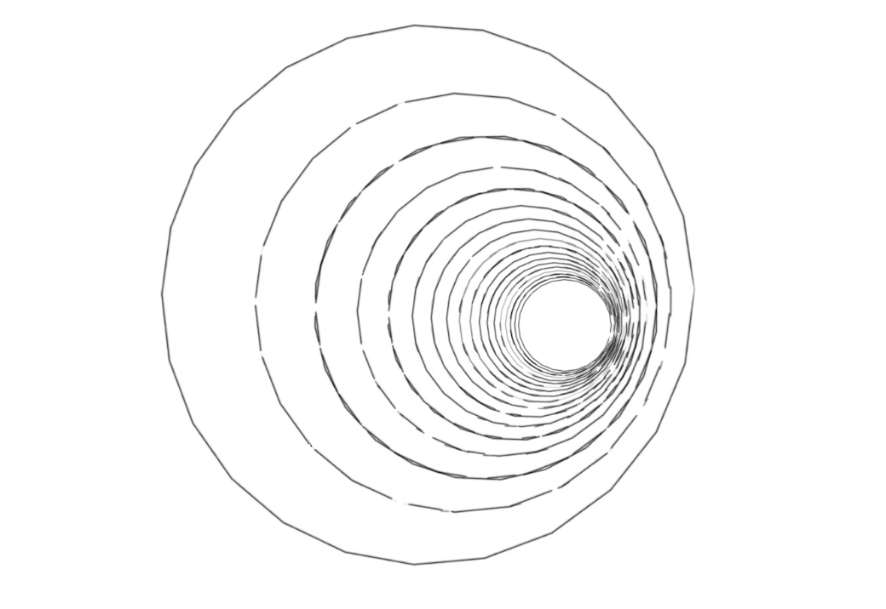

Tunnel Vision by Davis Dunaway ('17)

Commanding Black by Amla Rashingkar ('20)
Lincoln looked past the vibrant reflection the television painted on the window and stared into the abyss. His slender fingers tapped on the glass that separated him from the rest of the world. When all that responded was the howling wind pounding on the glass, Lincoln reverted his attention back to the drone of the television. The face of Abigail Zhang, long-time news anchor, interrupted the noisy static. However, her expression was anything but familiar. Abigail lacked the calm she normally held effortlessly, and her smile was forced and uncomfortable. She looked like she was going to throw up, her ordinarily sleek hair was an ebony mess, distress lurked in her bloodshot eyes, and her typically made-up face was pallid. When she opened her mouth, Lincoln heard her normally smooth voice crack, and then it adopted a gravelly sound. He stared at her and pondered what could make her confidence falter and fear strike her heart.
***
Exactly 17.38 miles away, Elliott stood in a cave. All he could hear were his thoughts amid the torrential gales and the beat of his heart as it pounded underneath his ribs and shook his skull, slithered underneath his skin and climbed into his olive green uniform, subtly weaving itself into the red, white, and blue embroidery that lay on his breast. He silently cursed himself for this-for setting a timer on his last moments, for thinking he could be noble, for thinking he would be cut out for the military. Elliott sighed in defeat; he was wrong, for America couldn’t enforce the Biden Doctrine. The World War he was fighting was just like the previous four. His numb and overwrought fingers anxiously fumbled with the Necromancer 83.6 that hung on his belt. It was an incredible weapon, fabricated in the deserts of Arizona with the capacity to annihilate everything within a 300 kilometer radius. It was small enough to fit into the palm of his hand, but it also harnessed the power of acnuclear weapon with the push of a red button on its otherwise black surface. Its compact size but forceful detonation led Elliot’s fellow soldiers to jokingly refer to it as the ‘hand grenade on steroids.’ Elliott looked at the jet black weapon in his pocket, and his smile faded after remembering its destructive intentions. He shuddered and trembled with terror; he let his hands drop and focused again on the screaming wind.
***